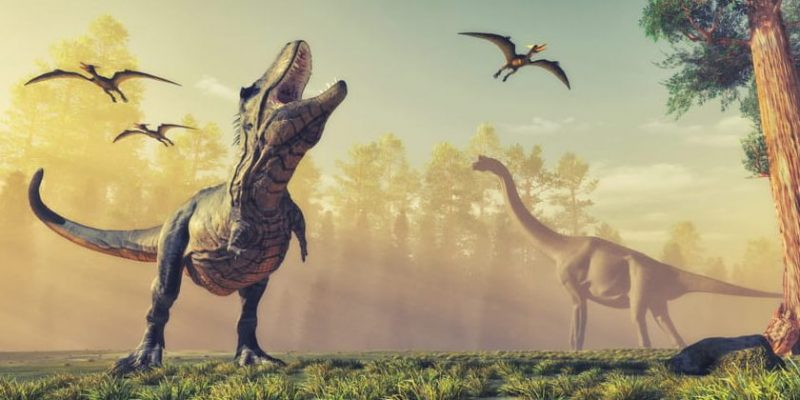
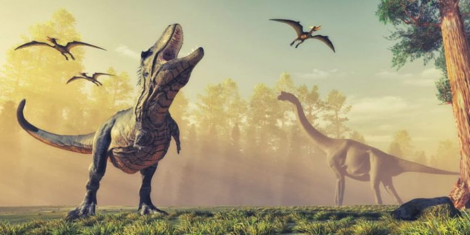

LA EXTINCIÓN QUE NUBLÓ AL MUNDO
Cuando hablas de algo o alguien que existió hace millones de años las posibilidades de encontrar un dato concreto se vuelven reducidas pero infinitas, un poco extraño, pero probablemente lo más real que hayamos podido ver en mucho tiempo. Es casi inexplicable como un par de huesos y restos de polvos sumergido en cráteres gigantes hablan de vidas que un día dominaron el planeta y al otro desaparecieron. Claramente aun es imposible saber con exactitud que sucedió, pero hay variedad de teorías que hablan del misterioso suceso, entre ellas esta: actividad volcánica, inundaciones, cambios climáticos, otro tipo de vidas superiores y el impacto de un objeto extraterrestre. Hoy hablaremos de un suceso extenso, concretamente una cadena de eventos causados por un meteorito de aproximadamente 10 kilómetros de diámetro que colisionó con la tierra en lo que hoy es conocida como Chicxulub, en la península de Yucatán, se dice que este fue el causante de la extinción masiva de los reptiles gigantes, pero no es así, lo que ocasiono su desaparición fue los acontecimientos que se desencadenaron después del impacto.
 

CAUSANTES
Esta teoría surge después del hallazgo de una roca rica en iridio que data de la época de la extinción, este elemento es escaso en la tierra, pero se encuentra muy presente en los meteoritos. Este choque levantó polvos que puso en total oscuridad al planeta, escombros y gases que alteraron drásticamente el clima. “En 2016 los científicos perforaron un núcleo de roca dentro de la parte submarina de Chicxulub, extrayendo una muestra que se extendía profundamente bajo el lecho marino. Este raro estudio dentro de las entrañas del cráter mostró que el impacto habría sido lo suficientemente poderoso como para enviar cantidades mortales de rocas y gases vaporizados a la atmósfera, y que los efectos habrían persistido durante años” Si bien, esta teoría es una de las más concretas y coherentes, sucesos como la erupción de volcanes que justamente ocurrió también en esa época hacen parte de los motivos por los cuales los dinosaurios desaparecieron. Lo que, si está claro, es que el tiempo de los reptiles gigantes para dominar el mundo, se había acabado.